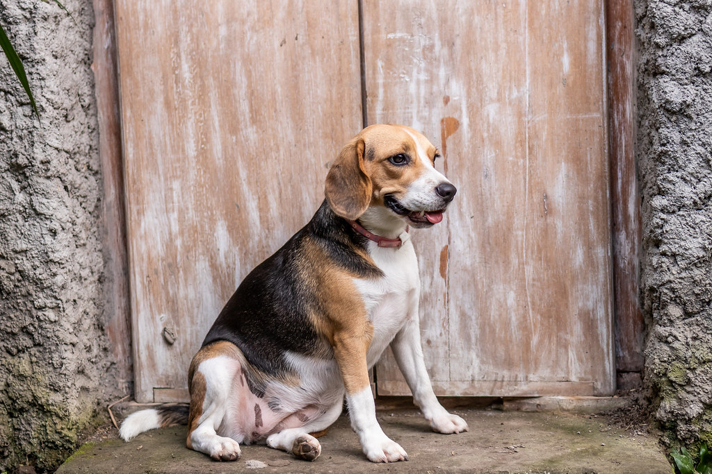
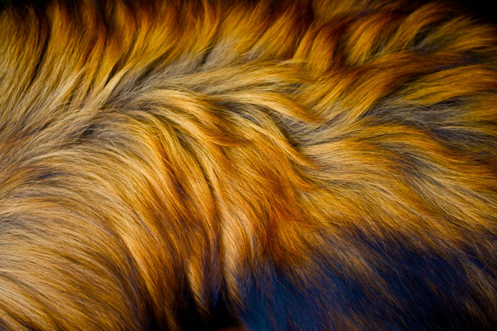

藤結びアトリエ
毛を結い、リボンで仕上げる。柏・藤心の小さなグルーミングアトリエ。
一頭一頭の体調と個性に合わせて。千葉県柏市藤心で、わんちゃんに寄り添うトリミングサロンです。
藤心の飼い主さんに選ばれている理由
柏市藤心でトリミングサロンを続けてこられたのは、一頭一頭に向き合う丁寧な仕事を、地域の飼い主さまが日々支えてくださっているからです。
01
細やかなオーダーにも応える確かな技術
顔の形から足まわり、尻尾の先まで。「ここをもう少し」というご要望にも、一頭ごとの骨格や毛質を見ながら丁寧にお応えしています。長年の経験に裏づけられた手仕事で、理想の仕上がりを目指します。
02
わんちゃんの体調を見ながらの施術
その日の体調やご様子をうかがいながら、カットやシャンプーの進め方を調整しています。わんちゃんにとって無理のない時間になるよう、一頭一頭のペースを大切にしています。
03
初めての飼い主さんにも丁寧な説明
ご予約時のご案内から、施術後のブラッシングの仕方、犬種ごとの毛の特徴まで。「初めて犬を家族に迎えた」という方にも安心していただけるよう、わかりやすい説明を心がけています。
04
仕上げは首もとに、やさしいリボンを
トリミングの最後は、首もとにリボンを結んでお仕上げします。屋号「リボン」に込めた、わんちゃんとご家族への小さな贈りもの。お迎えの際にもぜひご覧ください。

柏市藤心の住宅街にある、小さなアトリエ
トリミング サロン リボンは、千葉県柏市藤心にある個人経営のグルーミングサロンです。チェーン店のような回転重視の施術ではなく、一頭ごとに時間をかけて向き合えることが、個人店ならではの強みだと考えています。
地域の飼い主さまに長く通っていただけるよう、わんちゃんの個性やご家族のご要望を伺いながら、藤心の地で丁寧にお仕事をしてまいりました。
営業時間・定休日など最新情報はお電話(04-7108-1100)にてご確認ください。
メニューのご案内


お客様の声
Google口コミ 4.9(口コミ16件)より、一部をご紹介します。
“
いつも本当に丁寧にカットしてくださいます。わんちゃんのことをよく考えて、体調を見ながらカットやシャンプーをしてくださるので感謝しかありません。首に可愛いリボンをつけてくださるサービスも、とっても嬉しいです。
“
とても親切丁寧に、予約に必要なものから施術の説明までわかりやすく教えてくださいました。施術後もブラッシングのアドバイスや犬種ごとの毛の特徴を教えていただき、初めて犬を家族に迎えた私には大変ありがたかったです。
“
大騒ぎの2人も、このサロンはお気に入りでトリマーさんに懐いています。仕上がりもいつも大満足です。帰りはリボンをつけていただき、2人とも満足げに帰ります。